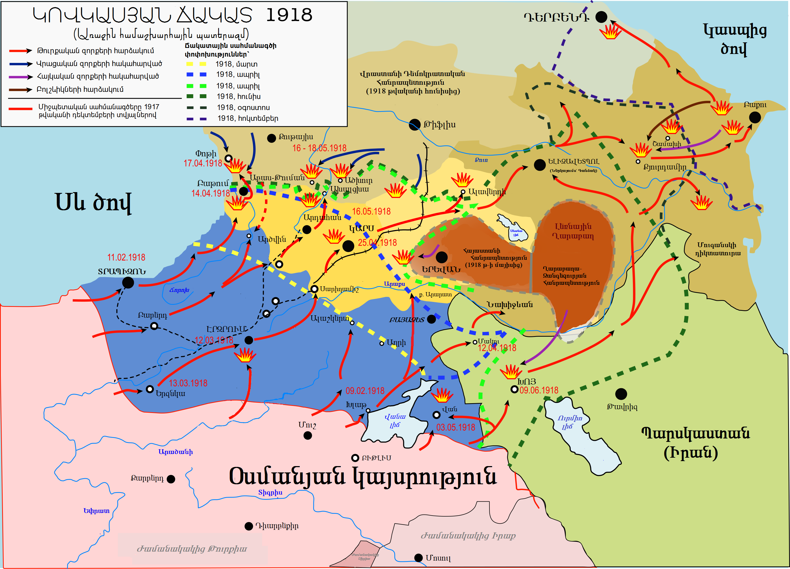
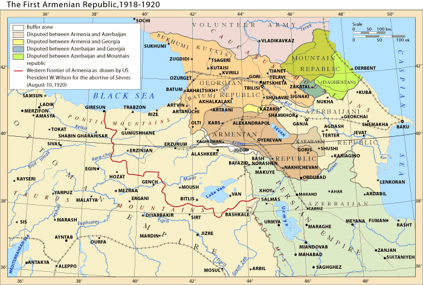
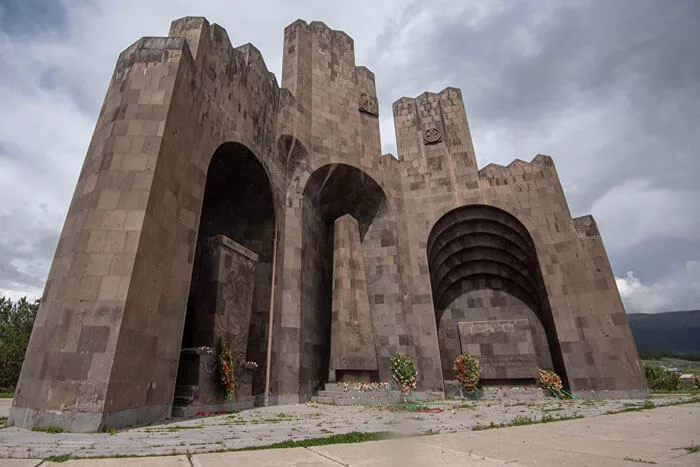

Ընդհանուր
Բաշ-Ապարանի հերոսամարտ, ճակատամարտ Արևելյան Հայաստան ներխուժած թուրքական բանակի և հայ կամավորական ջոկատների միջև 1918 թվականի մայիսի 23-29-ը։ Ինքնապաշտպանական հերոսամարտն ավարտվել է փառահեղ հաղթանակով։ Թուրքերն այդ ճակատում տվել են 3000-ից ավելի զոհ։
- Սկիզբ: Մայիս 23 1918
- Ավարտ: Մայիս 29 1918
- Վայր: Բաշ-Ապարան(ներկայիս Ապարան)
- Արդյունք: Հայկական կողմի մեծ հաղթանակ
- Հայաստանի ուժեր: 6000 մարտիկ
- Թուրքիայի ուժեր: 9000 զինվոր
- Հայաստանի կորուստներ: Համեմատաբար թեթև
- Թուրքիայի կորուստներ: 3000+ զոհ
1918 թ. մայիսի 25–27-ը 6 հազար հայ մարտիկներ՝ զինվոր և կամավոր, արյունալի մարտեր էին մղում 9 հազար թուրքի դեմ։ Զորքերի հրամանատար Դրոն որոշեց ձևավորել 700 հեծյալներից կազմված հարվածային բռունցք՝ թշնամու զորախմբի կենտրոնը թուլացնելու նպատակով: Թուրքերը, չդիմանալով հայ զինվորների հուժկու կրակին, թողեցին իրենց դիրքերը և փախան Ապարանի բարձրադիր վայրեր: Դրոն, սակայն, իր զորքի հարձակումներով այդ ուժերին կրկին իջնել տվեց հարթավայր՝ նպաստավոր պայմաններ ստեղծելով հատկապես հեծելազորի գործողությունների համար: Հայկական հեծելազորը նետվեց գրոհի, ճեղքեց ճակատը և անցավ թշնամու թիկունք: Հակառակորդի ամբողջ ճակատային կենտրոնը դիմեց փախուստի: Երկու օր էլ մոտակա Միրաք գյուղում որոշ մարտեր ընթացան, բայց ոսոխն արդեն պարտություն էր կրել:
Հետաքրքիր փատեր
1.Քաղաքային պատերազմ. ճակատամարտի որոշ հատվածներ տեղի են ունեցել հենց Բաշ Ապարան քաղաքում, ինչը հանգեցրել է ինտենսիվ քաղաքային պատերազմի, որը բնութագրվում է մերձակա մարտերով և փողոցային մարտերով:։
2.Հայկական պարտիզանական մարտավարություն. հայ պաշտպանները, բախվելով ավելի մեծ և ավելի լավ զինված թշնամու հետ, դիմեցին պարտիզանական մարտավարությունների, ինչպիսիք են դարանակալումները և հարվածել-փախչել հարձակումները՝ ճնշելու և թուլացնելու օսմանյան ուժերը:
3.Կանանց դերը. կանայք վճռորոշ դեր են խաղացել Բաշ Ապարանի ճակատամարտում հայ պաշտպաններին աջակցելու գործում: Նրանք ծառայել են որպես բուժքույր, նյութատեխնիկական աջակցություն ցուցաբերել և նույնիսկ զենք են վերցրել՝ պաշտպանելու իրենց տներն ու ընտանիքները:
4.Էթնիկ կազմը. Բաշ Ապարանի պաշտպանները ներառում էին ոչ միայն էթնիկ հայեր, այլև տարածաշրջանում ապրող այլ էթնիկ խմբերի անհատներ, որոնք արտացոլում էին տարածքի բազմազգ բնույթը:
5.Մարտիկների թվաքանակ. Չնայած թվաքանակով գերազանցելուն և գերազանցող կրակային հզորությանը, հայ պաշտպանները հաջողությամբ պահեցին Բաշ Ապարանը օսմանյան հարձակման դեմ՝ ապահովելով Հայկական հարցի վճռորոշ հաղթանակն իր պատմության բուռն ժամանակաշրջանում:
6.Հետախույզների դերը. Հայ հետախույզները վճռորոշ դեր են խաղացել հակառակորդի տեղաշարժերի և դիրքերի մասին տեղեկություններ հավաքելու գործում՝ արժեքավոր տեղեկություններ տրամադրելով պաշտպանական ռազմավարությունների և հակահարձակումների պլանավորման համար:
Նախապատմություն
Ապարանի ճակատամարտը սկսվել է 1918 թվականի մայիսի 23-ի կեսօրին, երբ Էսադ փաշայի դիվիզիան և Քյազիմ փաշայի երկու գնդերը (ավելի քան 10000 զինվոր ու թալանի պատրաստ 3000-ից ավելի դրսեկ, տեղացի թուրք ու քուրդ ելուզակ) մտել են Ապարանի գավառի սահմանը։ Հետախուզական առաջապահ գումարտակը ուշ երեկոյան հասել է Միրաքի կամրջի դիմաց, և թնդացել է նրանց վրա արձակված ապարանցի աշխարհազորայինների հրացանազարկը։ Սակայն ճակատամարտը սկսվել էր ավելի վաղ, երբ մայիսի 15-ին թուրքերը մտել էին Ալեքսանդրապոլ (այժմ՝ Գյումրի) և Արագած սարի հարավակողմով ու հյուսիսակողմով շարժվել դեպի Հայաստանի սիրտը՝ Երևան։ Հյուսիսակողմով արշավող թուրքերն անարգել մտել են Սպիտակ, գրավել շրջակա գյուղերը և ընթացքից շրջվել դեպի Ապարանի ճանապարհը։ Համընդհանուր խուճապ է սկսվել։ Սկսել են տեղահանվել նաև Ապարանի սահմանային գյուղերը։ Հյուսիսակողմից արշավող թուրքերի ճանապարհը հնարավոր էր փակել Աշտարակի մոտ, Եղվարդում, Երևանի սահմանագլխին։ Բայց Ապարանում թուրքերի առաջն առնելու մասին որևէ պլան նախապես չէր կազմվել։ Եվ այդ ճակատագրական պահին, երբ թվում էր, որ այլևս ոչ մի ուժ չէր կարող Ապարանի գավառամասում փակել թուրքերի ճանապարհը, Ազգային խորհրդի նախագահ Արամ Մանուկյանի հրամանով Ապարանի գավառապետ Սեդրակ Ջալալյանը և Ապարանի գավառի Արագյուղ գյուղի բնակիչ, Երևանի ոստիկանության աշխատակից Արսեն Տեր-Պողոսյանը սկսել են ծանոթանալ իրավիճակին։ Նրանք հանդիպել են Տեր-Հովհաննես Տեր-Մինասյանի հետ։ Իրավիճակի վերլուծությունից ծնվել է ինքնապաշտպանության վճիռը. կանգնել թշնամու դեմ, չգաղթել և չհանձնվել նրա ողորմածությանը։ Ինքնապաշտպանության հրամանատարությունն իրենց վրա են վերցրել Սեդրակ Ջալալյանն ու Արսեն Տեր-Պողոսյանը, ստեղծվել է պաշտպանության խորհուրդ Տեր-Հովհաննես Տեր-Մինասյանի նախագահությամբ։ Սեդրակ Ջալալյանի անձնական պաշտպանության ձիավորները հրաման են ստացել փակել նահանջի ճանապարհը և զենք կրելու ընդունակ բոլոր տղամարդկանց վերադարձնել Ապարան գյուղ։
 
Ընթացք
Մայիսի 22, կեսօր։ Պաշտպանության առաջին օր։ Նույն օրվա երեկո։ Թուրքերի առաջապահ ջոկատները, որոնք ոչ մի դիմադրության չէին սպասում, գնդակոծությունից շփոթվել են և, կորուստներ տալով, հետ քաշվել ու սպասել մայիսի 23-ի լուսաբացին։ Գիշերվա ընթացքում, փաստորեն, ինչպես և Արագած լեռան արևմտյան ստորոտին՝ Սարդարապատում, Արագած լեռան արևելյան ստորոտին ևս ձևավորվել է ռազմաճակատ։ Երևանում ճիշտ է գնահատվել ստեղծված իրավիճակը և նույն գիշեր նոր ձևավորված ռազմաճակատի հրամանատար է նշանակվել բազմափորձ Դրոն՝ Դրաստամատ Կանայանը։ Մայիսի 23։ Հայաստանում պահեստային զինված ուժեր չկային։ Թուրքերը հրետանու և գնդացրային կրակով ճնշել են մոտ 8 կիլոմետրանոց ռազմաճակատի ամբողջ գիծը պահող աշխարհազորայիններին։ Չնայած համառ դիմադրությանը՝ կորուստները զգալի էին, և մարտական գործողությունները ղեկավարող Արսեն Տեր-Պողոսյանը երեկոյան հրամայել է նահանջել երկրորդ գիծ։ Մայիսի 24։ Արամ Մանուկյանի գիտությամբ՝ Երևանի զորաբաժնի հրամանատարությունը որոշել է Սարդարապատից Ապարանի ռազմաճակատ փոխադրել կանոնավոր ռազմական միավորումներ։ Օրվա առաջին կեսին Արագածի ստորոտով՝ Արագած - Քուչակ գյուղերի վրայով ճակատ է մտել և ռազմաճակատի ձախ կողմում դիրքավորվել գնդապետ Դոլուխանյանի 6-րդ հրաձգային գունդը, որը համալրվել էր հիմնականում ապարանցի մարտիկներով։ Մայիսի 25։ Թուրքական բանակի հրամանատար Վեհիբ փաշան Հայաստանի երեք ուղղություններում՝ Սարդարապատի, Ապարանի, Վանաձորի ուղղությամբ գործող զորամիավորումներին վճռական հարձակման հրաման է տվել, և այդ օրը Ապարանի ճակատը դարձել է Հայաստանում ծավալված պատերազմի կենտրոն։ Բավական էր թուրքերն այստեղ ճեղքեին պաշտպանությունը, և անմիջականորեն հարվածի տակ կմնար Սարդարապատը։ Կեսօրին, անձրևի տակ թուրքերը փորձել են Սարալանջ գյուղից արևելք ընկած հատվածում անցնել հորդացած Քասաղ գետը, դուրս գալ աշխարհազորայինների թիկունքը և կոտրել ապարանցիների դիմադրությունը։ Պահը դարձել է օրհասական, բայց տեղ հասած կադրային ջոկատները գրավելով Քասաղի երկու ափերի բարձունքները, կրակի տակ են առել թուրքերին ու ստիպել նրանց անկանոն նահանջել։ Օրվա երկրորդ կեսին թուրքերը կատաղի գրոհ են ձեռնարկել Արագածի փեշին։ Գերակշիռ ուժերով նրանց հաջողվել է ճեղքել հայերի պաշտպանությունը Ալուջայի ձորի մոտ և ավելի քան մեկ կիլոմետր թափանցել հայերի թիկունքը։ Ճակատը թեև մեծ դժվարությամբ, բայց փակվել է, և թուրքերը հայտնվել են երկկողմ կրակի տակ։ Եղվարդի կողմից մարտադաշտ հասած գնդապետ Զալինյանի 300 զինվորներն ու Արագածի փեշով առաջացող փարպեցի աշխարհազորայինների հարյուրյակը փակել են թուրքերի ճանապարհը, և վերջիններս հայտնվելով եռակողմ կրակի տակ՝ գլխովին ոչնչացվել են։ Կեսօրին Ապարանի ռազմաճակատում նոր վտանգի ուղղություններ են ի հայտ եկել։ Թուրքական հրամանատարության պահանջով Ապարանի գավառի արևելյան կողմից՝ Ձորագլուխ գյուղի ուղղությամբ հարձակման են անցել Հանքավանում բնակվող թուրքերը։ Մարտը տեղի է ունեցել Կարմիր վանք հնավայր-բնակավայրի մատույցներում։ Թուրքերին չի հաջողվել կոտրել ապարանցի աշխարհազորայինների դիմադրությունը և չորսժամյա մարտից հետո հետ են քաշվել՝ մարտադաշտում թողնելով քսանից ավելի դիակ։ Գրեթե նույն ժամանակ Բուժական գյուղի կողմից ավելի քան հինգ հարյուր թուրքեր նոր ճակատ են բացել Նորաշեն-Երնջատափ գյուղերի ուղղությամբ։ Հարձակման մասին տեղեկացված հայկական հրամանատարությունը այս ուղղությամբ ևս հասցրել էր պաշտպանական խրամատներ փորել Նորաշեն գյուղից շուրջ երկու կիլոմետր արևելք գտնվող ավերակ բերդից մինչև Երնջատափ գյուղի քարհանքը։ Պաշտպանական այս հատվածում կենտրոնացվել են Նորաշեն և Երնջատափ գյուղերի գրեթե բոլոր տղամարդիկ. շուրջ երեք հարյուր տղամարդ։ Սկսված մարտի լուրն ստանալուն պես հայկական հրամանատարությունը այս ճակատ է ուղարկել Վարդենիսից հավաքագրված հարյուրյակը։ Այս ուղղությամբ մարտը շարունակվել է և այդ օրը մինչև մութն ընկնելը, և մինչև հաջորդ օրվա վերջը։ Այս ուղղությամբ ևս թուրքերին չի հաջողվել խուճապ առաջացնել արդեն երեք կողմից կռվող ապարանցիների դեմ և հնարավորություն ստեղծել թուրքական հիմնական ուժերի համար, ճեղքելու ռազմաճակատի կենտրոնական հատվածը։ Թուրքերն այս ուղղությամբ տվել են հարյուրից ավելի զոհ։ Ապարանի հերոսամարտի նախորդ ուսումնասիրողներից որևէ մեկը Ձորագլխի և Նորաշեն-Երնջատափի ռազմագործողությունների մասին տեղեկություն չունի, իսկ որոշներն էլ կարծել են, թե թուրքերը ճեղքել են ճակատը և հասել մինչև Քուչակ և Երնջատափ։ Թուրքերն այդ օրը մարտադաշտում թողել են 1000-ից ավելի դիակ։
Ավարտ
Մայիսի 26-ին Դիրքային փոփոխություններ չեն եղել։ Թուրքերը մի քանի ուղղություններում փորձել են առաջ շարժվել, սակայն չի հաջողվել։ Օրվա վերջին Սարդարապատից Ապարան են փոխադրվել կապիտան Խորեն Իգիթխանյանի հրետանային մարտկոցը, գնդապետ Հովսեփյանի 5-րդ հրաձգային գունդը։ Մայիսի 27-ին Ապարանի ռազմաճակատում հայ աշխարհազորայինների, զինված խմբերի, կադրային զինվորների թիվն անցել է 9000-ից։ Թեև թուրքերը դարձյալ թվական գերազանցություն ունեին, բայց հոգեբանական առավելությունն անվերապահորեն անցել էր հայերի կողմը։ Չկարողանալով դիմագրավել հայերի գրոհներին՝ թուրքերը թողել են Նիգավանը, Մելիքգյուղը և կենտրոնացել են Ճահճուտի մոտակա բարձունքներում։ Մայիսի 28-ին Թիֆլիսում գործող Հայոց Ազգային խորհուրդը Հայաստանը հայտարարել է անկախ պետություն և ստանձնել իշխանության պատասխանատվությունը։ Բայց Ապարանի ռազմաճակատում այդ կարևորագույն նորությունը դեռևս չգիտեին։ Դրաստամատ Կանայանն անձամբ ամբողջ ճակատը տարել է թշնամու դեմ գրոհի։ Դիրքերը գրավվել են զոհերի գնով։ Այդ օրը զոհվել են սեբաստացի Ազարիկը, գանձակեցի Զեմլյակը, գառնեցի Մարտիրոսի հորեղբորորդին, այլ քաջորդիներ։ Չնայած կորուստներին՝ հայերը գրոհը չեն դադարեցրել նաև գիշերը։ Մայիսի 29-ին Թուրքական դիվիզիայի արյունաքամ մնացորդները սպիտակ դրոշ են պարզել։

{kind=link}
{kind=link}
{kind=link}
{kind=link}
{kind=link}
{kind=link}
{kind=link}
{kind=link}
{kind=link}